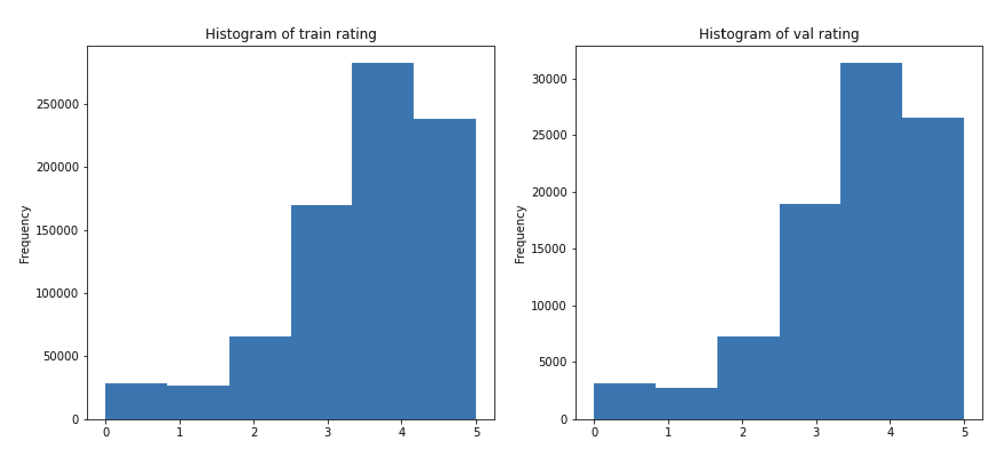
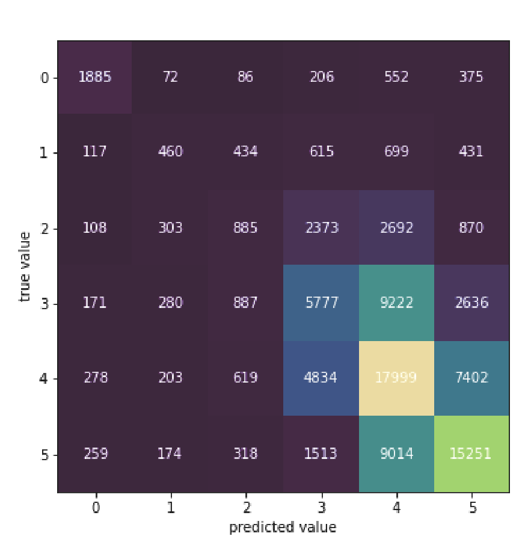
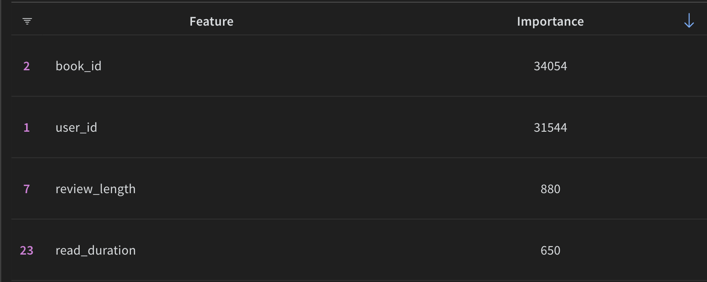

Goodreads book rating prediction
Apr 2023 ~ Kaggle competition
Length: 1w (at 0.25 FTE)
Programming language: Python (Pandas, NumPy, datetime, Matplotlib, seaborn,
scikit-learn, NLTK, W&B, argparse, LightGBM, CatBoost)
Data: approximately 0.9M book reviews, containing the book, the author, the review
text, and its stats
Problem description:
Predict the review ratings of books on Goodreads
Approach:
First, the data was split into the train, validation, and test sets. In order to validate the data
partitioning, the distributions of multiple features were compared across the sets, including
the target feature "rating", which can be seen in the picture below. Concerning data leakage,
two controversial features are "book_id" and "user_id". Depending on the goal of the project,
these may need to be removed because the model would not perform well on new users and books. However, given that the objective is to reach the best
F1 score in the competition, these variables were kept.

Next, the train set was explored and cleaned by filling in missing values, converting features
to the right type, dropping useless columns, and deriving additional variables, such as the
reading duration, the review length, and whether this is a spoiler or not. Afterward, the
same cleaning methods were applied to the other two sets.
Finally, two tree models were designed, namely a LightGBM and a CatBoost classifier, and tuned to achieve
the best F1 score on the validation data.
Results:
Since the rating 4 is the most common one, the naïve baseline was computed by setting all
ratings of the validation reviews to 4. Accordingly, this resulted in an F1 score of 0.08.
The best model turned out to be a LightGBM classifier, which reached a score of 0.4, a result
five times better than the naïve baseline. On the test data, the model scored 0.38, implying
no significant overfitting on the validation set.
The confusion matrix below shows that the model does not make big mistakes, with most
of the predictions close to the true values of the ratings, as expressed by the lighter shades
on the main diagonal. Generally, when the model fails to predict the rating correctly,
it misses the value by 1-2 points.

Not surprisingly, the two ID features reached the highest importance among all the features,
with a significant distance to the third most important feature.
